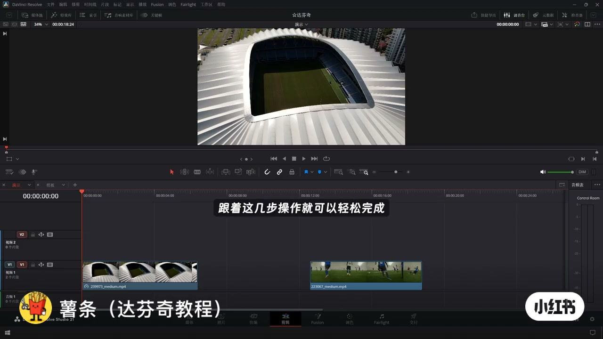
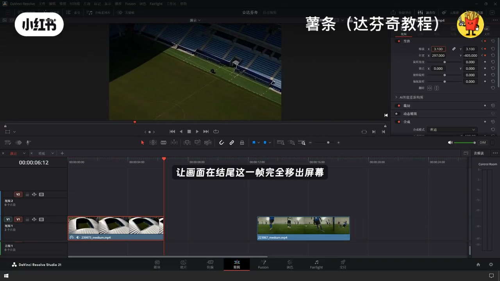
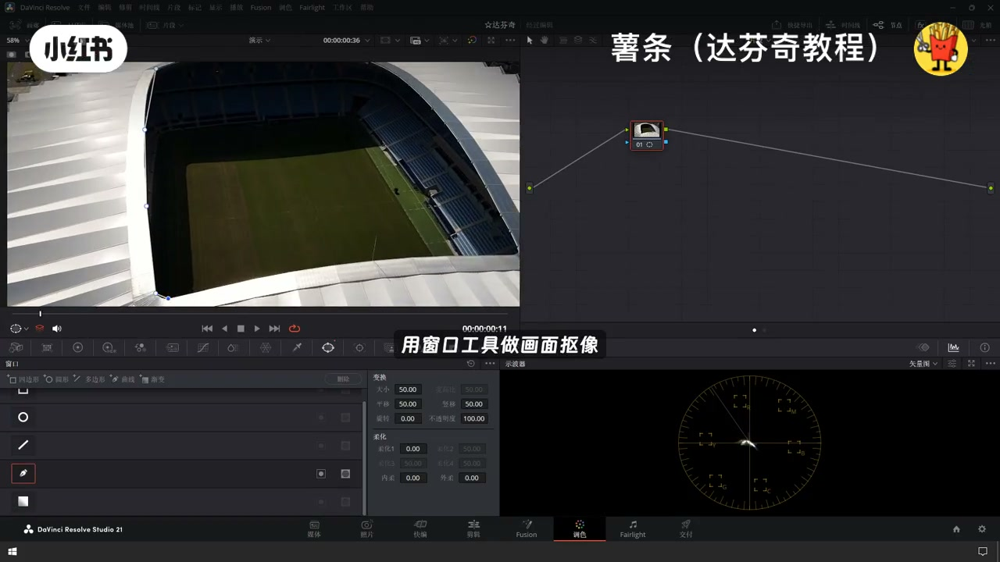
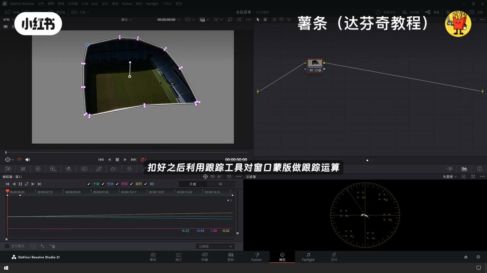
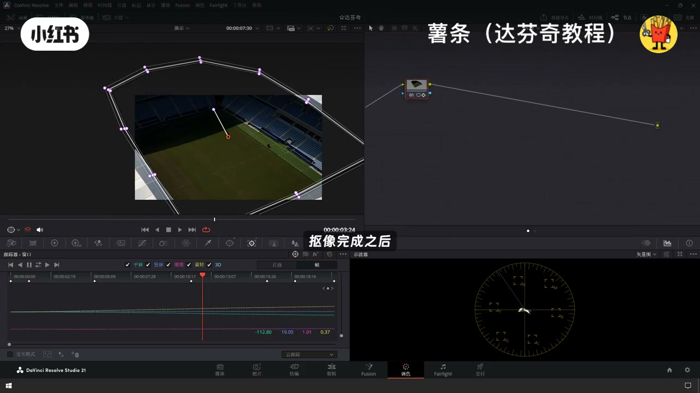
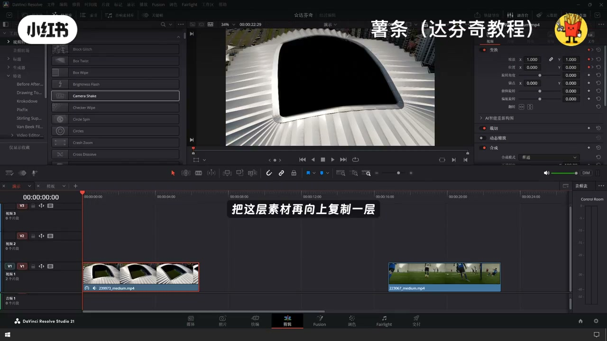
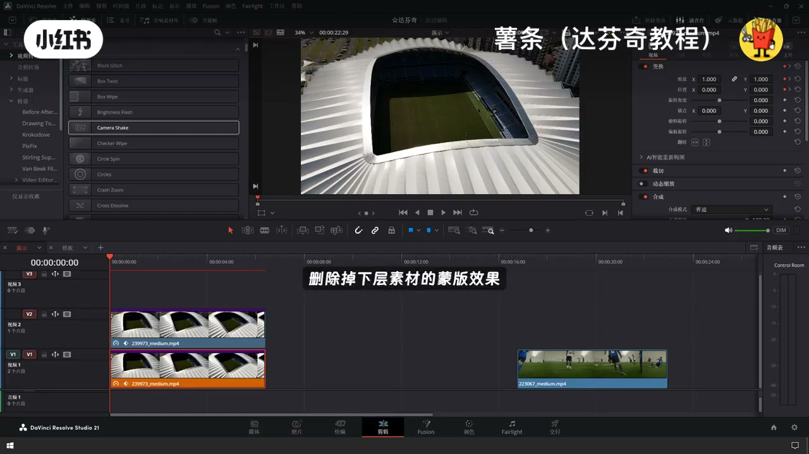
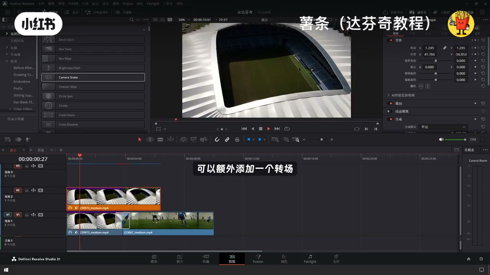

内容要点
「达芬奇高级穿梭缩放遮罩转场｜氛围感镜头切」教程要点：想在达芬奇里做出丝滑的穿梭缩放就照转场 → 跟着这几步操作就可以轻松完成 → 第一步先给第一段素材打上位移加缩放的关键针 → 让画面在结尾这一针完全移出屏幕…
知识结构
想在达芬奇里做出丝滑的穿梭缩放就照转场
第三步 铺好之后
把这层素材再向上复制一层
- 想在达芬奇里做出丝滑的穿梭缩放就照转场
- 跟着这几步操作就可以轻松完成
- 第一步先给第一段素材打上位移加缩放的关键针
- 让画面在结尾这一针完全移出屏幕
- 第二步 切换到调色页面
想在达芬奇里做出丝滑的穿梭缩放就照转场
00:00–00:23想在达芬奇里做出丝滑的穿梭缩放就照转场
想在达芬奇里做出丝滑的穿梭缩放就照转场；跟着这几步操作就可以轻松完成；第一步先给第一段素材打上位移加缩放的关键针；让画面在结尾这一针完全移出屏幕；第二步 切换到调色页面；用窗口工具做画面构像；记得给萌版加一点雨挂


00:22–00:42第三步 铺好之后
第三步 铺好之后；利用跟踪工具对窗口萌版做跟踪运算；第四步 回放检查；把跟踪错位不准的地方手动修正调整；扣像完成之后将扣像之后的结果；输出二法通道到剪辑面板；第五步 切回到剪辑页面


00:42–01:02把这层素材再向上复制一层
把这层素材再向上复制一层；第六步 删除掉下层素材的萌版销；第七步 将下层素材结尾稍微剪短一节；把第二段素材衔接接上来；第八步 两段素材衔接的位置；可以额外添加一个小转场；过渡效果会更加自然




口述/画面要点（21段）
结合 Whisper medium 与画面大字整理；专有名词已校对。
想在达芬奇里做出丝滑的穿梭缩放就照转场
跟着这几步操作就可以轻松完成
第一步先给第一段素材打上位移加缩放的关键针
让画面在结尾这一针完全移出屏幕
第二步 切换到调色页面
用窗口工具做画面构像
记得给萌版加一点雨挂
第三步 铺好之后
利用跟踪工具对窗口萌版做跟踪运算
第四步 回放检查
把跟踪错位不准的地方手动修正调整
扣像完成之后将扣像之后的结果
输出二法通道到剪辑面板
第五步 切回到剪辑页面
把这层素材再向上复制一层
第六步 删除掉下层素材的萌版销
第七步 将下层素材结尾稍微剪短一节
把第二段素材衔接接上来
第八步 两段素材衔接的位置
可以额外添加一个小转场
过渡效果会更加自然